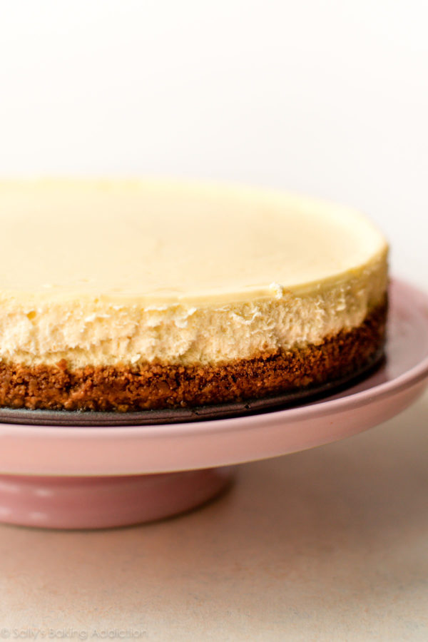

Cheesecake

Nothing can calm you down like a good cheesecake. Here is a recipe for one
of the best recipes for the same.
Ingredients
For the Crust
- 10 crackers
- 1 tbsp sugar
- 7 tbsp unsalted butter
For the Filling
- 2 (1/2) pounds cream chees
- 6 large eggs
- 2 large egg yolks
- 1 tbsp lemon juice
- 2 tbsp vanilla extract
- 1 pinch salt
Steps :
Prepare the crcker crust
- Preheat oven to 325 F.
- Break up the graham crackers and pulse them in a food processor until you have fine crumbs. While you do this, you can be melting the butter in a small saucepan over low heat (or just melt it in the microwave).
- Transfer the crumbs to a mixing bowl and stir in the sugar.
- Finally, stir in the melted butter and combine until the crumbs are uniformly moistened.
- Press the crumbs into the bottom of a 9-inch springform pan until you have an even layer.
- Press the crumbs into the bottom of a 9-inch springform pan until you have an even layer.
Prepare the Cheesecake
- Preheat oven to 500 F.
- Cut the cream cheese into cubes and let it sit at room temperature for about 20 minutes to soften.
- Transfer the softened cream cheese to the bowl of a stand mixer. Beat it on medium speed with the paddle attachment for about 2 minutes.
- Scrape the sides of the bowl with a rubber spatula, then add the sugar, salt, lemon juice, vanilla, and sour cream and beat for another 2 minutes.
- Scrape the bowl again, then add the eggs and egg yolks and beat until everything is completely blended and the mixture is smooth and fluffy, another couple of minutes. You may need to stop the mixer to scrape the bowl every now and then.
- Fill a roasting pan half full of water and set it on the lower rack of your oven. Seal the bottom of the springform pan with foil and set it on a baking pan.
- Now pour the filling into the springform pan and transfer the baking pan (with the cheesecake on it) to the upper rack in the oven.
- Bake at 500 F for 10 minutes, then lower the heat to 200 F and bake for another 1 1/2 hours. Don't open the oven door. When it's finished, the cheesecake should jiggle a little bit at the center but be firm at the edges.
- Transfer the cheesecake to a wire rack, and after cooling for 15 minutes, carefully loosen the edges of the cake with a knife.
- Let the cheesecake cool for a full 3 hours at room temperature, then cover with plastic wrap and refrigerate at least overnight, although a full 24 hours is best.
- Serve and enjoy.